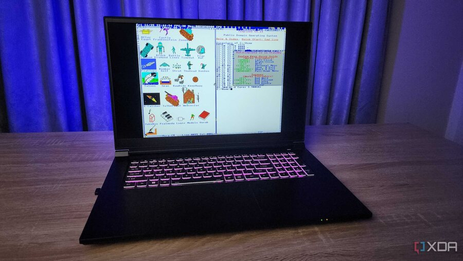

Код и люди
журнал о программистах и их операционных системах
Выпуск № 1 · ноябрь 2026
Три истории о том, как один человек пишет операционную систему
Ядро, на котором работает большая часть интернета. Система, которую один человек собрал за десять лет, чтобы говорить с Богом. Язык, придуманный для этой системы. Три материала — о коде, о людях и о том, что стоит за строчкой #include.

TempleOS 5.03 на современном ноутбуке в виртуальной машине. Скриншот: XDA Developers.
Привет! Это учебный журнал о трёх очень разных способах делать одно и то же дело — писать системы, на которых работают компьютеры. Здесь нет ни одной строчки CSS и ни одного скрипта: только семантическая разметка HTML, текст, изображения и встроенное видео. Листайте статьи, рассматривайте скриншоты, слушайте и смотрите первоисточники.
Три статьи, три героя, одна общая тема: человек, который садится за клавиатуру и создаёт систему с нуля — а потом десять, двадцать или тридцать лет живёт с последствиями.
В августе 1991 года студент из Хельсинки отправил в конференцию comp.os.minix короткое сообщение: «делаю (бесплатную) операционную систему, просто хобби». Сегодня это ядро работает на серверах, телефонах, автомобилях и даже на вертолёте, летавшем над Марсом. Разбираемся, как хобби стало инфраструктурой цивилизации — и почему сам Линус называет себя не визионером, а инженером, который «чинит яму перед собой».
Инженер-электрик из Висконсина, магистр Arizona State University, сотрудник Ticketmaster. В 1996 году его жизнь раскололась: маниакальные эпизоды, больницы, диагноз «шизофрения». Из этого он сделал единственное, что умел, — операционную систему, которая, по его словам, была заказана Богом. История гениальности и болезни без дешёвых сенсаций.
640×480, шестнадцать цветов, одноголосый звук, отсутствие сети и полная свобода: всё в ring 0, ни одного системного вызова, свой компилятор, свой редактор, своя файловая система. Разбираем HolyC, таблицу отличий от Linux, игру After Egypt и «оракула», с которым Терри Дэвис советовался о динозаврах.
Как один человек создаёт операционную систему — и что из этого получается через годы.
Герои
Линус Торвальдс (Linux, Git), Терри Дэвис (TempleOS, HolyC), а также сама TempleOS как инженерный объект.
Формат
Только HTML: семантические элементы, встроенные изображения и видео, ссылки на первоисточники. Без стилей и без скриптов.
Источники
Wikipedia, архивы Internet Archive, официальные сайты проектов, интервью и записи выступлений. Ссылки — в конце каждой статьи.
Как читать этот журнал
Начните с главной страницы — вы уже здесь. Дальше статьи можно читать в любом порядке: у каждой есть своё оглавление, врезки с фактами и раздел «Источники». Внутри статей есть встроенные видео и аудио — они открываются прямо на странице, интернет для этого нужен.
Если хочется сохранить материалы в закладки, воспользуйтесь входом в аккаунт: в этой учебной сборке авторизация демонстрационная и не отправляет данные на сервер.
Материалы подготовлены в учебных целях. Иллюстрации взяты из открытых источников и используются с указанием происхождения.